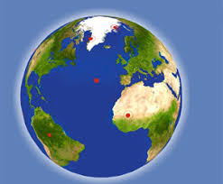

Cada 22 de abril se celebra en todo el mundo el Día de la Tierra. Se trata de una iniciativa del senador estadounidense Gaylord Nelson, quien instauró en 1970 este día para crear una conciencia común a los problemas de la sobrepoblación, la producción de contaminación, la conservación de la biodiversidad y otras preocupaciones ambientales para proteger el mundo.